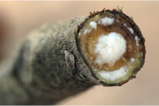
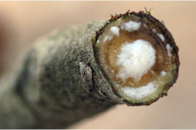
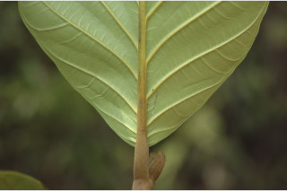
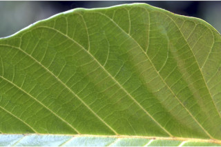
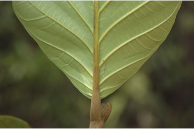
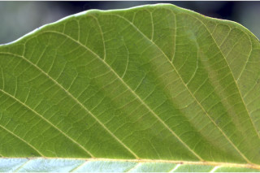
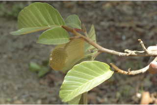
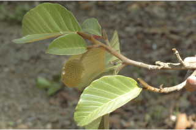
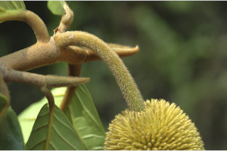
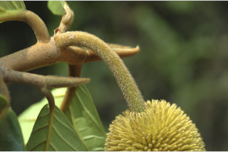

Large trees up to 35 m tall.
35 ಮೀ. ಎತ್ತರದವರೆಗಿನ ದೊಡ್ಡ ಗತ್ರದ ಮರಗಳು.
Large trees up to 35 m tall.
பெரிய மரங்கள் 35 மீ. உயரம் வரை வளரக்கூடியது.
Bark dark grey, smooth when young, later scaly / flaky, lenticellate; blaze cream.
ತೊಗಟೆ ಕಡು ಬೂದು ಬಣ್ಣದಲ್ಲಿದ್ದು ಎಳೆಯದಾಗಿದ್ದಾಗ ನಯವಾಗಿರುತ್ತದೆ ನಂತರ ಶಲ್ಕೆ/ಚಕ್ಕೆ ರೂಪದಲ್ಲಿರುತ್ತದೆ ಮತ್ತು ಸೂಕ್ಷ್ಮ ವಾಯುವಿನಿಮಯ ಬೆಂಡು ರಂಧ್ರಗಳ ಸಮೇತವಿರುತ್ತದೆ;ಕಚ್ಚು ಮಾಡಿದ ಜಾಗ ಕೆನೆ ಬಣ್ಣದಲ್ಲಿರುತ್ತದೆ.
Bark dark grey, smooth when young, later scaly / flaky, lenticellate; blaze cream.
மரத்தின் பட்டை கரும்சாம்பல் நிறமானது, வழவழப்பானது, முதிரும் போது செதில்களாக உதிருபவை, பட்டைத்துளைகள் (லெண்டிசெல்லேட்) உடையது; உள்பட்டை கிரீம் நிறமானது.
Young branchlets terete, tawny hirsute, with annular scars.
ಕಿರುಕೊಂಬೆಗಳು ದುಂಡಾಗಿದ್ದು ಕಂದು ಮಿಶ್ರಿತ ಹಳದಿ ಬಣ್ಣದ ಒರಟು ರೋಮಗಳಿಂದ ಕೂಡಿರುತ್ತವೆ ಮತ್ತು ವಲಯಾಕಾರದ ಗುರುತುಗಳಿಂದ ಕೂಡಿರುತ್ತವೆ.
Young branchlets terete, tawny hirsute, with annular scars.
சிறியநுனிக்கிளைகள் குறுக்குவெட்டுத் தோற்றத்தில் வளையமானது, உரோமங்களுடையது, இலையடிச்செதில் உதிர்ந்ததால் உண்டாகும் வட்டவடுக்களுடையது.
Latex white, profuse.
ಜಿನುಗು ದ್ರವ ಬಿಳಿ ಬಣ್ಣದಲ್ಲಿದ್ದು ವಿಫುಲವಾಗಿರುತ್ತದೆ.
Latex white, profuse.
வெள்ளை நிற பால் அதிகளவு சுரக்கிறது
Leaves simple, alternate, spiral, clustered at twigs end; stipules to 2.5 cm long, lanceolate, tawny hirsute, caducous, leaving annular scar; petiole 1.3-3 cm long, stout, subterete or planoconvex, hirsute; lamina 10-30.5 x 5-14 cm, usually ovate to broadly elliptic, apex subacute or shortly acuminate, base rounded or subacute, margin entire or undulate (lobed when young), coriaceous, drying brown, densely hirsute beneath when young, later become glabrous except on midrib and nerves; midrib flat above; secondary_nerves 10-12 pairs, ascending; tertiary_nerves broadly reticulo-percurrent.
ಎಲೆಗಳು ಸರಳವಾಗಿದ್ದುಪರ್ಯಾಯ ಮತ್ತು ಸುತ್ತು ಜೋಡನಾ ವ್ಯವಸ್ಥೆಯಲ್ಲಿದ್ದು ಕುಡಿಕೊಂಬೆಗಳ ತುದಿಯಲ್ಲಿ ಗುಂಪಾಗಿರುತ್ತವೆ; ಕಾವಿನೆಲೆಗಳು 2.5 ಸೆಂ.ಮೀ.ವರೆಗಿನ ಉದ್ದವಿದ್ದು ಭರ್ಜಿಯ ಆಕಾರದಲ್ಲಿದ್ದು ಕಂದು ಮಿಶ್ರಿತ ಹಳದಿ ಬಣ್ಣದ ಒರಟು ರೋಮಗಳಿಂದ ಕೂಡಿರುತ್ತವೆ ಮತ್ತು ವಲಯಾಕಾರದ ಗುರುತುಗಳನ್ನುಳಿಸಿ ಉದುರಿ ಹೋಗುತ್ತವೆ;ತೊಟ್ಟುಗಳು 1.3 -3 ಸೆಂ.ಮೀ. ಉದ್ದ ಹೊಂದಿದ್ದು ಧೃಢವಾಗಿರುತ್ತವೆ ,ಉಪ-ದುಂಡಾಗಿರುವ ಅಥವಾ ಸಪಾಟ ಪೀನಮಧ್ಯದ ಆಕಾರವನ್ನು ಹೊಂದಿರುತ್ತವೆ ಮತ್ತು ಒರಟು ರೋಮಗಳಿಂದ ಕೂಡಿರುತ್ತವೆ;ಪತ್ರಗಳು 10 -30.5 X 5 – 14 ಸೆಂ.ಮೀ. ಗಾತ್ರವಿದ್ದು ಸಾಮಾನ್ಯವಾಗಿ ಅಂಡಾಕಾರದಿಂದ ವಿಶಾಲ ಅಂಡವೃತ್ತದವರೆಗಿನ ಆಕಾರದಲ್ಲಿರುತ್ತವೆ, ಪತ್ರದ ತುದಿ ಉಪ-ಚೂಪು ಅಥವಾ ಕೊಂಚವಾಗಿ ಕ್ರಮೇಣ ಚೂಪಾಗುವ ರೀತಿಯಲ್ಲಿದ್ದು ದುಂಡಾದ ಅಥವಾ ಉಪ-ಚೂಪಾದ ಬುಡವನ್ನು ಹೊಂದಿರುತ್ತವೆ, ಅಂಚು ನಯ ಅಥವಾ ತರಂಗಿತವಾಗಿರುತ್ತದೆ (ಎಳೆಯದಾಗಿದ್ದಾಗ ಹಾಲೆಗಳನ್ನು ಹೊಂದಿರುತ್ತವೆ)ಮೇಲ್ಮೈ ತೊಗಲನ್ನೋಲುವ ಮಾದರಿಯಲ್ಲಿರುತ್ತವೆ, ಪತ್ರಗಳು ಒಣಗಿದಾಗ ಕಂದು ಬಣ್ಣದಲ್ಲಿರುತ್ತವೆ, ಎಳೆಯದಾಗಿದ್ದಾಗ ದಟ್ಟವಾದ ಒರಟು ರೋಮಗಳಿಂದ ಕೂದಿದ್ದು ನಂತರ ಮಧ್ಯನಾಳ ಮತ್ತು ಇತರೆ ನಾಳಗಳನ್ನು ಹೊರತು ಪಡಿಸಿ ರೋಮರಹಿತವಾಗಿರುತ್ತವೆ;ಮಧ್ಯ ನಾಳ ಮೇಲ್ಭಾಗದಲ್ಲಿ ಚಪ್ಪಟೆಯಾಗಿರುತ್ತದೆ; ಎರಡನೇ ದರ್ಜೆಯ ನಾಳಗಳು 10 ರಿಂದ 12 ಜೋಡಿಗಳಿದ್ದು ಆರೋಹಣ ಮಾದರಿಯಲ್ಲಿರುತ್ತವೆ;ಮೂರನೇ ದರ್ಜೆಯ ನಾಳಗಳು ವಿಶಾಲಜಾಲ ಬಂಧ ನಾಳ ವಿನ್ಯಾಸದಲ್ಲಿದ್ದು ಎಲೆ ದಿಂಡಿಗೆ ಅಡ್ಡವಾಗಿ ಕೂಡುವ ವಿನ್ಯಾಸದಲ್ಲಿರುತ್ತವೆ.
Leaves simple, alternate, spiral, clustered at twigs end; stipules to 2.5 cm long, lanceolate, tawny hirsute, caducous, leaving annular scar; petiole 1.3-3 cm long, stout, subterete or planoconvex, hirsute; lamina 10-30.5 x 5-14 cm, usually ovate to broadly elliptic, apex subacute or shortly acuminate, base rounded or subacute, margin entire or undulate (lobed when young), coriaceous, drying brown, densely hirsute beneath when young, later become glabrous except on midrib and nerves; midrib flat above; secondary_nerves 10-12 pairs, ascending; tertiary_nerves broadly reticulo-percurrent.
இலைகள் தனித்தவை, மாற்றுஅடுக்கமானவை, சுழல் போல் அமைந்தது, சிறுகிளைகளின் நுனியில் இலைகள் கூட்டமாக மற்றும் நெருக்கமாக காணப்படும்; இலையடிச்செதில் 2.5 செ.மீ. நீளமானது, ஈட்டி வடிவானது, உரோமங்களுடையது, எளிதில் உதிரக்கூடியது மற்றும் வட்டவடுக்களை ஏற்படுத்துகின்றன; இலைக்காம்பு 1.3-3 செ.மீ. நீளமானது, தடித்தவை, குறுக்குவெட்டுத் தோற்றத்தில் வளையமானது அல்லது பிளேனோகான்வக்ஸ், உரோமங்களுடையது ; இலை அலகு 10-30.5 X 5-14 செ.மீ., முட்டை வடிவானது முதல் அகன்ற நீள்வட்ட வடிவானது, அலகின் நுனி கூரியது அல்லது சிறிய அதிக்கூரியது, அலகின் தளம் வட்டமானது அல்லது கூரியது, அலகின் விளிம்பு முழுமையானது அல்லது அலை போன்றது (இளம்பருவத்தில் பிளவுகளுடையது ), கோரியேசியஸ், உலரும் போது ப்ரவுன் நிறமானது, கீழ்பரப்பு இளம்பருவத்தில் அடர்த்தியாக உரோமங்களுடையது, முதிரும் போது அலகின் கீழ்பரப்பில் மையநரம்பு மற்றும் நரம்பயை தவிர பிற பகுதிகள் உரோமங்களற்றது ; மையநரம்பு மேற்பரப்பில் அலகின் பரப்பிற்கு சமமானது; இரண்டாம் நிலை நரம்புகள் 10-12 ஜோடிகள், நுனி நோக்கி வளைந்தவை; மூன்றாம் நிலை நரம்புகள் அகன்றவலைப்பின்னல்-பெர்க்கரண்ட் அமைப்பு கொண்டது.
Flowers unisexual; male flowers in axillary spikes, pendulous, 14 cm long; female flowers in axillary spikes, ovoid.
ಹೂಗಳು ಏಕಲಿಂಗಿಗಳು;ಗಂಡು ಹೂಗಳು ಅಕ್ಷಾಕಂಕುಳಿನಲ್ಲಿದ್ದು, 14 ಸೆಂ.ಮೀ.ಉದ್ದವಿದ್ದು ತೂಗಾಡುವ ಕದಿರುಮಂಜರಿಯಲ್ಲಿರುತ್ತವೆ;ಹೆಣ್ಣು ಹೂಗಳು ಅಕ್ಷಾಕಂಕುಳಿನ ಕದಿರುಮಂಜರಿಯಲ್ಲಿರುತ್ತವೆ;
Flowers unisexual; male flowers in axillary spikes, pendulous, 14 cm long; female flowers in axillary spikes, ovoid.
மலர்கள் ஓர் பாலானவை; ஆண் மலர்கள் இலைக்கோணங்களில் காணப்படுபவை, ஸ்பைக் வகை மஞ்சரி, தெங்கியவை, 14 செ.மீ. நீளமானது; பெண் மலர்கள் இலைக்கோணங்களில் காணப்படுபவை, ஸ்பைக் வகை மஞ்சரி, முட்டைவடிவானது.
Syncarp (sorosis), subglobose or ellipsoid with long echinate processes, orange when ripe; seeds many, ovoid.
ಸಂಯುಕ್ತ ಫಲ (ತಿರುಳುಳ್ಳ ಸಂಯುಕ್ತ ಫಲ) ಉಪ-ಗೋಳಾಕಾರ ಅಥವಾ ಅಂಡವೃತ್ತದ ಆಕಾರದಲ್ಲಿದ್ದು ಉದ್ದನೆಯ ಗಟ್ಟಿಯಾದ ಮುಳ್ಳುಗಳ ಸಮೇತವಿರುತ್ತದೆ ಹಾಗೂ ಕಳಿತಾಗ ಕಿತ್ತಳೆ ಬಣ್ಣ ಹೊಂದಿರುತ್ತದೆ; ಬೀಜಗಳು ಹೆಚ್ಚಿನ ಸಂಖ್ಯೆಯಲ್ಲಿದ್ದು ಅಂಡದ ಆಕಾರ ಹೊಂದಿರುತ್ತವೆ.
Syncarp (sorosis), subglobose or ellipsoid with long echinate processes, orange when ripe; seeds many, ovoid.
சின்கார்ப் (சொரோசிஸ்), கோளவடிவானது அல்லது நீள்வட்ட வடிவானது நீளமான தடித்த முற்களுடையது., கனியும் போது ஆரஞ்ச் நிறமானது; விதைகள் எண்ணற்றவை, முட்டைவடிவானது.
 



 



 

 
